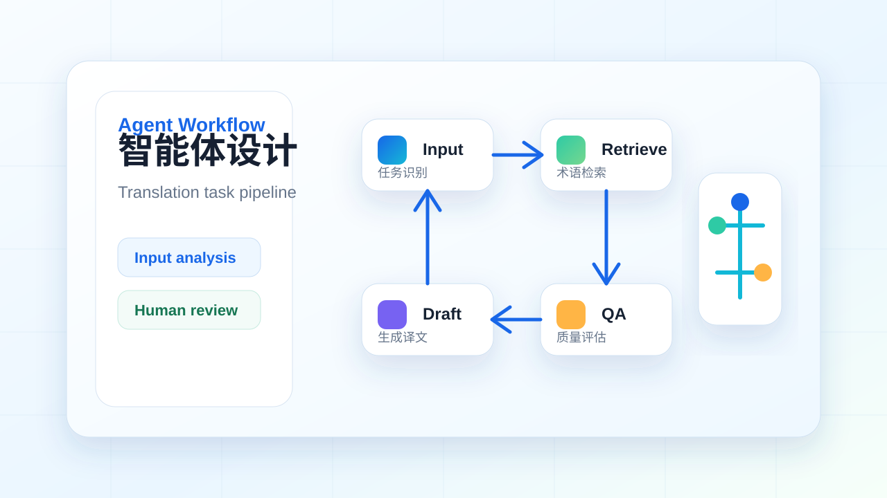
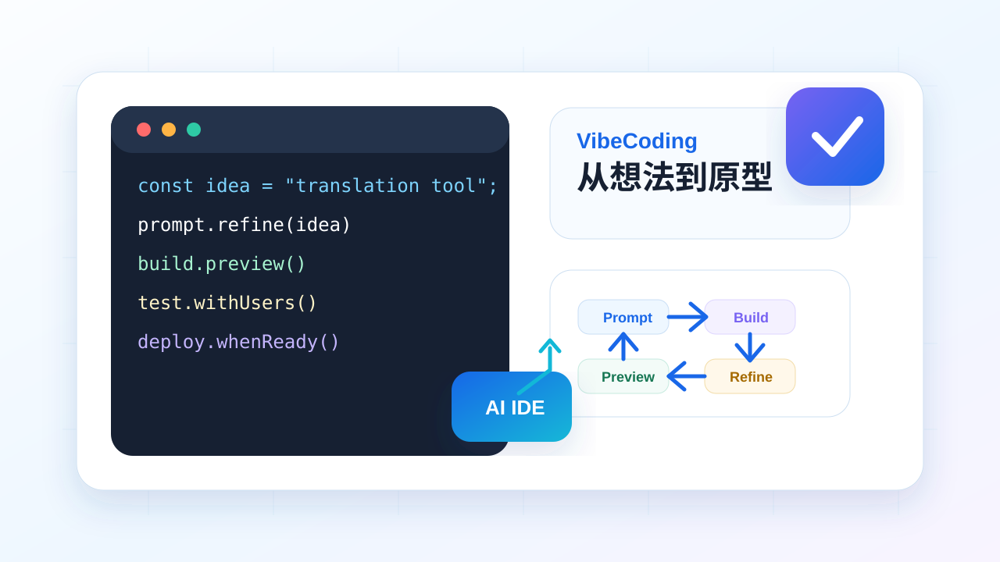

基础层
CAT 与 MemoQ
理解计算机辅助翻译软件的价值：自动化重复劳动、管理翻译资源、提升项目一致性。
Learning Path
先掌握生产工具，再理解智能流程，最后用 VibeCoding 把想法做成可运行作品。
理解计算机辅助翻译软件的价值：自动化重复劳动、管理翻译资源、提升项目一致性。

围绕真实项目完成文件导入、术语插入、翻译记忆复用、质量检查、报告与定稿。

把翻译任务拆成可执行流程：输入识别、术语检索、草译、审校、质量评估与人类确认。

用自然语言与 AI 协同开发轻量应用，例如术语查询器、译后编辑面板、双语语料清洗工具。
Courseware Viewer
下方嵌入课程 PPT：CAT 与 Trados 保留原始版式、图片和软件截图；智能体与 Vibe Coding 课件为整理后的教学版。学生可在播放器中翻页，也可以全屏打开或下载文件。
若在线预览加载较慢，请点击“全屏打开”或“下载 PPT”。大文件课件由 GitHub Release 托管，轻量自制课件随网站静态资源发布。
Practice Lab
课程不止学工具，还要把工具、模型与业务流程组合成可复用方案。
术语库、翻译记忆库、双语语料与项目规范的建立、清洗、复用和评估。
设计翻译 Agent：读取任务、检索术语、生成译文、执行 QA、输出修改建议。
用 AI 协作完成前端页面、数据处理脚本、评估面板或课堂演示工具。
以小组为单位提交项目说明、使用演示、关键代码、部署链接与复盘报告。
Agent Courseware
围绕口语口译训练场景，先看课件理解工作流，再进入两个飞书练习按步骤搭建。
Vibe Coding Courseware
把飞书长文整理成 12 页教学 PPT，并保留原始链接，方便学生回到原文查看安装包、平台地址和补充说明。
Software Hub
根据工作坊“待装软件”整理：CAT 工具、云端 TMS、语料对齐、单机版翻译工具与本地化部署工具集中在这里，便于课前安装和课堂演练。
memoQ10.5 + Trados2022，用于项目管理、翻译记忆库、术语库与质量检查演练。
打开下载LanguageX 云端协作管理系统，用于多人协作、任务分配与项目进度管理。
打开注册ABBYY Aligner + SISU Aligner，用于中英双语语料制作、清洗与对齐训练。
打开下载智语 AI 翻译工具箱，用于划词翻译、文件翻译、截图翻译与大模型辅助改写。
下载安装包AnythingLLM + Ollama + Qwen3.5 4b 模型，用于离线模型调用、RAG 知识库与私有化翻译演练。
打开下载Community
课堂问题、工具报错和项目想法可进入 GitHub Discussions；教师信息用于课程沟通。
建议按“工具操作 / 智能体设计 / VibeCoding / 作品展示”分类发帖，便于同学互助和课后整理。
进入 GitHub Discussions天津外国语大学高级翻译学院硕士生导师；天津外国语大学智能语言服务产业学院执行院长；天津外国语大学人工智能翻译实验室主任。